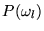

[例] 入力パターンは英文字パターンで、その識別を行なう。 各英字の事前生起確率は次の表の通り。
| 英字 | 確率(%) | 英字 | 確率(%) | 英字 | 確率(%) | |||
| A | 8.29 | J | 0.21 | S | 6.33 | |||
| B | 1.43 | K | 0.48 | T | 9.27 | |||
| C | 3.68 | L | 3.68 | U | 2.53 | |||
| D | 4.29 | M | 3.23 | V | 1.03 | |||
| E | 12.08 | N | 7.16 | W | 1.62 | |||
| F | 2.20 | O | 7.28 | X | 0.20 | |||
| G | 1.71 | P | 2.93 | Y | 1.57 | |||
| H | 4.54 | Q | 0.11 | Z | 0.09 | |||
| I | 7.16 | R | 6.90 |
もし入力パターンを見ずに識別する場合は、 英字Eが最大の確率を示すことから、つねに 入力パターンのカテゴリ名は``E''である。 とすると誤り率をもっとも少なくする。
以上の例は次のように一般化できる。
今カテゴリを
とし、
その事前生起確率を
とする。
この時、ある入力パターンxのカテゴリを
 に識別した時の誤り率は
に識別した時の誤り率は